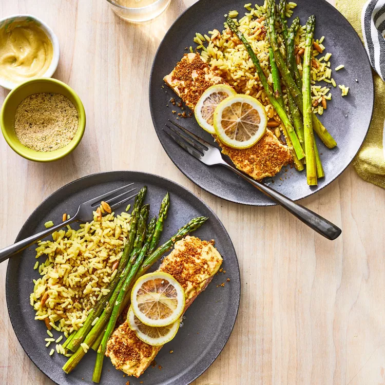

Baked Salmon Fillets Dijon

Receta de filetes de salmon horneado al dijon
SALMON SALMON SALMON!
Ingredients:
- 4 (4 ounce) fillets salmon
- 3 tablespoon prepared Dijon-style mustard
- salt and ground black pepper to taste
- 1/4 cup italian-style dry bread crumbs
- 1/4 cup butter, melted
Directions
- Preheat an outdoor grill for medium-high heat and lightly oil the grate.
- Mix together turkey, spinach, feta, eggs, and garlic in a large bowl until well combined; form into 8 patties.
- Cook patties on the preheated grill on both sides until no longer pink in the center, 15 to 20 minutes. An instant-read thermometer inserted into the center of patties should read at least 165 degrees F (74 degrees C)./li>
Home